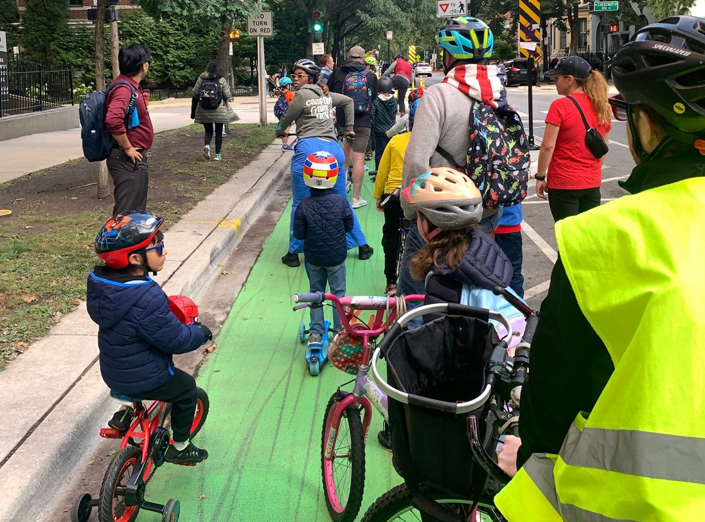

FAQs
Everything you need before your first ride.

What is a bike bus?
A group of kids and grown-ups who bike to school together along a set route, at a set time, like a school bus you pedal. Adults ride at the front, the back, and at every turn. Kids stay in the middle.
Between crossings we roll at about 6 to 8 miles an hour, and we regroup at every light, so the group stays together and nobody gets dropped mid-block. We do leave each stop on time, though — so get to your corner a few minutes early.
There's usually music. One of the parents rides with a speaker.
You don't sign up and you don't commit. Show up at a stop, join the group, ride to school.
How do I join?
Meet us at any point along the route. Then join the WhatsApp group so you hear about weather calls and route changes.
How old does my kid have to be?
Any age. Kids ride their own bikes, ride in a trailer or cargo bike with a parent, or come on a scooter. Younger riders should have an adult with them.
Can my kid keep up on a scooter?
Scooters are welcome and plenty of kids ride them. Be aware that we hold 6 to 8 miles an hour between crossings, which is quicker than most kids scoot, so a scooter rider will fall back on the longer blocks and catch up at the next light.
If that sounds like hard work, join us at Erie & Dearborn at 8:13 instead. From there it's about a third of a mile with a traffic light every block or two, so the pace is much gentler and you finish with everyone else. Big-wheel scooters roll far better on Chicago pavement than small hard ones.
What about the Jenner campus?
Jenner takes fifth through eighth grade and drops off at 8:45. The bike bus can continue there from Ogden, leaving at 8:30 and arriving 8:40. It isn't running yet — if you'd use it, tell us and we'll start it. See the route page for the way there.
What about middle schoolers at Jenner?
The ride continues to the Jenner campus on Cleveland Avenue, leaving Ogden at 8:30 and arriving at 8:40, ahead of the 8:45 drop-off. See the route page for the map.
What are the rules?
- Helmets for everyone.
- Kids stay between the lead rider and the sweep rider.
- No passing the lead rider.
- Single file when the lane narrows; the ride leader will call it.
- An adult comes with each child unless you've arranged otherwise with the organizers.
What about the weather?
We ride in almost anything. Cold is fine, drizzle is fine, wind is usually fine. Dress the kids warmer than you think and bring gloves.
We call it off for heavy rain, ice, thunderstorms, and days when the wind is strong enough to push a small rider sideways. If the ride is cancelled you'll hear it in the WhatsApp group the evening before, or by 7:15 that morning if the forecast turns overnight.
If you're not sure, check the group before you leave the house.
I don't bike. Can I still help?
Yes, and it matters. Two things that help most:
- Stand on Dearborn just south of Walton and keep the bike lane clear of cars as the kids come through.
- Come out on Dearborn, State, Oak or Walton to wave at the kids on their Wednesday victory lap around the school at 8:20am.
You can also greet riders at school and help lock up bikes, take photos, or bring snacks.
Can I start a bike bus from my part of the neighborhood?
Please do. If you're east of the school, gather a few families and meet us at Erie & Dearborn — we wait there. Message the WhatsApp group and we'll help you set it up.